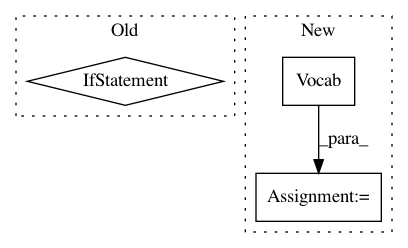

f4275c0b80197e0f1bbd3a2a1a31cf07d85013b1,scripts/word_embeddings/evaluate_pretrained.py,,,#,173
Before Change
enforce_max_size(token_embedding_, args_.max_vocab_size)
known_tokens = set(token_embedding_.idx_to_token)
// Auto-extend token_embedding with unknown extra eval tokens
if token_embedding_.unknown_lookup is not None:
eval_tokens = evaluation.get_tokens_in_evaluation_datasets(args_)
// pylint: disable=pointless-statement
token_embedding_[[
t for t in eval_tokens - known_tokens
if t in token_embedding_.unknown_lookup
]]
if args_.max_vocab_size is not None and len(
token_embedding_.idx_to_token) > args_.max_vocab_size:
logging.warning("Computing embeddings for OOV words that occur "
"in the evaluation dataset lead to having "
"more words than --max-vocab-size. "
"Have %s words (--max-vocab-size %s)",
len(token_embedding_.idx_to_token),
args_.max_vocab_size)
similarity_results = evaluation.evaluate_similarity(
args_, token_embedding_, ctx, logfile=os.path.join(
args_.logdir, "similarity{}.tsv".format(name)))
analogy_results = evaluation.evaluate_analogy(
After Change
if args_.similarity_datasets:
with utils.print_time("find relevant tokens for similarity"):
tokens = evaluation.get_similarity_task_tokens(args_)
vocab = nlp.Vocab(nlp.data.count_tokens(tokens))
with utils.print_time("set {} embeddings".format(len(tokens))):
vocab.set_embedding(token_embedding_)
evaluation.evaluate_similarity(
args_, vocab.embedding, ctx, logfile=os.path.join(
In pattern: SUPERPATTERN
Frequency: 4
Non-data size: 3
Instances
Project Name: dmlc/gluon-nlp
Commit Name: f4275c0b80197e0f1bbd3a2a1a31cf07d85013b1
Time: 2019-01-09
Author: leonard@lausen.nl
File Name: scripts/word_embeddings/evaluate_pretrained.py
Class Name:
Method Name:
Project Name: stanfordnlp/stanza
Commit Name: b89d94957773d49908829272f8c1ac98c6031243
Time: 2018-10-22
Author: zyh@stanford.edu
File Name: models/lemma/data.py
Class Name: DataLoader
Method Name: init_vocab
Project Name: explosion/spaCy
Commit Name: fd9fd275c5209b64d163943da33cadeea01b247c
Time: 2018-02-06
Author: honnibal+gh@gmail.com
File Name: spacy/tests/regression/test_issue1945.py
Class Name:
Method Name: test_issue1945
Project Name: pytorch/tutorials
Commit Name: 4794be6f7e3827228b6e0dc9b1cfe432a3ecdeb3
Time: 2021-03-04
Author: brianjo@fb.com
File Name: beginner_source/text_sentiment_ngrams_tutorial.py
Class Name:
Method Name: